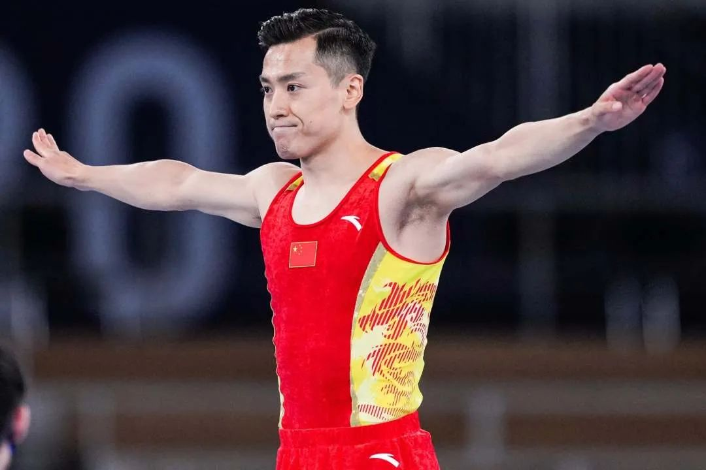

致敬英雄，感谢传奇——献给“蹦床大满贯”董栋老师
【来源】：信息科大奥宣团 | 2021-04-01
蹦床传奇，东方之星！北京时间7月31日，2020东京奥运会男子蹦床项目决赛结束，奥运“四朝元老”——董栋老师表现优异，获得一枚宝贵的银牌。参与4届奥运会，拼搏在9平方米的“战场”，奥运生涯中获得1金2银1铜的成绩，董栋老师无愧于自己，将自己的青春都奉献于国家、奉献于蹦床事业，无愧于他一直以来的梦想。国家体育总局体操运动管理中心主任缪仲一赛后称赞董栋老师配得上“伟大运动员”的称号。
体会冠军故事，创造精彩人生
北京信息科技大学冬奥精神宣讲团的同学们于2021年3月31日采访了中国蹦床队中的一位传奇人物，他就是我们的榜样——董栋老师。2002年底董栋老师进入山西省蹦床专业队训练，由于他在蹦床方面的天赋，于2005年正式入选国家队。从2009年全运会起，董栋老师几乎囊括了国内外大小蹦床赛事的冠军，奥运会冠军、世锦赛冠军、世界杯冠军、亚运会冠军…… 已经参加过四次奥运会的董栋老师，在赛场上素以极强的心理素质震慑对手，东京奥运会准备阶段董栋老师就平静且坚定地说道：“现在还不是最好的状态。但最好的董栋正在逐渐回归，接下来一直到东京奥运会，会越来越好。” 最终32岁的董栋老师不负众望，成功为中国蹦床队再获一枚银牌，而优异成绩的取得和董老师渐入佳境的状态和自信乐观的心态是密不可分的。
认知清醒，目标明确
这些年来，董栋老师一直对自己的体育生涯有清醒的认知，训练目标也很明确。他告诉我们：“防伤病、练体能、强专项是互相配合的关系，训练和恢复的重要性各占一半。恢复好才能系统性训练，才能保障训练的连续性和有效性。所以我的冬训加强体能、防控伤病要两手抓、两手硬。” 作为运动员，每次参加国际性的大型赛事时，总会面对来自外界各方的压力，董栋老师表示：“参加比赛时压力是不可避免的，但我们能做的就是尽可能地投入比赛，做到心无旁骛，平时也要学习如何调解自己的情绪，学习如何对待不确定的因素，这样才能在比赛中发挥自己的真实水平。” 董栋老师对于体育的热爱和他身上不屈不挠的奥运精神令人钦佩，我们要从董栋老师的训练中认识到，在我们的人生中，要想成功，要想取得成就，必须通过自己坚持不懈的努力。

增强文化自信，展示大国风采
董栋老师平时喜欢研究思政理论、学习历史知识，经常鼓励同学们传承博大精深的中华优秀传统文化，学习前人的实践成果，领悟其中的智慧，也要积极主动地关注时政，学习习近平新时代中国特色社会主义思想的实践意义，进而将自己的理想目标和国家的伟大事业紧密结合起来，新时代的优秀青年们要为实现中华民族伟大复兴的中国梦而努力奋斗！当宣讲团的同学们谈到北京再次成功申奥、并即将在2022年第二次承办奥运会的时候，董栋老师作为一名中国的运动员，语气中充满了自豪之情，他说：“北京再一次成功申奥，对于我们整个民族来说都是意义非凡的，相比于2008年的北京奥运会，我国又经过了14年的发展，可以更充分地向世界展示中国五千年的历史和中国人的传统美德，这些都可以增强我们的文化自信，展示我们如今的大国风采。”
矢志不渝，书写传奇
当董栋老师谈到自己第一次参加奥运会的情景时，他表示由于第一次就参加北京奥运会，当时19岁的他压力是非常大的，最终在比赛中获得了一枚铜牌，董栋老师现在回想起当时的场景，还是感觉有些可惜。但正是由于那次奥运会才让董栋老师认识到自己的不足，改进了接下来的训练方式，才会在2012年的伦敦奥运会上取得冠军。董栋老师曾坦言，他一直认为北京奥运会是人生非常重要的时刻；那天的比赛，那一枚铜牌，至今都在深深影响着董栋老师，“没有那一天，也就没有今天。” 2021年7月31日，东京奥运会男子蹦床项目决赛，董栋老师表现几近完美，位移、高度都很好，落网稳定，获得了61.235分，排名升至第一位。 白俄罗斯队的伊万·利特维诺维奇获得了资格赛第一名，因此在决赛阶段最后一个出场。他起跳很高，前几个动作都很顺利，但之后出现两次较大位移，落网的时候更是险些失误。61.715分，利特维诺维奇难以置信地获得冠军。 面对着卫冕冠军汗查洛，面对着强大的对手利特维诺维奇，董栋老师超越自我，最终获得亚军。银牌分量同样很重，在和媒体交流时，董栋老师说：“ 我觉得最终没获得金牌，有些许遗憾，但今天这场比赛我想所有人都看到了，我们遇到了一些困难，预赛中高磊失误了，决赛我孤军奋战，压力挺大，但没过多时间去考虑，必须撑起这个担子去拼搏。最终取得银牌，对自己的表现很满意，当然如果是金色的，那所有人都会更高兴 。”而最让观众们感动不已的是董栋老师在赛后接受央视采访时动情落泪：“我不是因为没有获得金牌而遗憾，而是觉得确实这么多年大家为我付出了很多，我很感动，也很感激。” 国际体操联合会在官方网站发表文章表示，“凭借董栋在蹦床运动上取得的成就，他已然成为公认的蹦床传奇。”成为第一位参加四届奥运会的男子蹦床运动员，每届奥运会都拿到奖牌，并且金银铜牌一个都不差，董栋老师这一路走来，称得上“传奇”二字。 “我很喜欢传奇这个词，因为这是对我多年来运动生涯的一个肯定。”董栋老师说。 我们同样衷心地向董栋老师道一声感激：谢谢您，英雄！赞颂你，传奇！ 每条河流都有一个梦想：奔向大海。长江、黄河都奔向了大海，方式不一样。长江劈山开路，黄河迂回曲折，轨迹不一样，但都有一种水的精神。水在奔流的过程中，如果像泥沙般沉淀，就永远见不到阳光了。 董栋老师在自己的职业生涯中取得了瞩目的成就，但是他从不骄傲，始终用专业认真的态度来对待每次的训练，脚踏实地，为实现梦想而奋斗。感谢董栋老师对我们北京信息科技大学各项活动的大力支持！对于董栋老师而言，为祖国作贡献就是他前进的动力，对于我们信息科大的学子而言，我们亦当向董栋老师学习，树立远大理想、热爱伟大祖国、担当时代责任、勇于砥砺奋进，传承并发扬奥运健儿们的永不言败、拼搏向前的精神，为报效祖国而不懈努力，谱写出自己的华丽乐章！
浏览量：34
- 联系
我们

工作日：
早9:00-晚18:00
杨老师：
400-888-8888